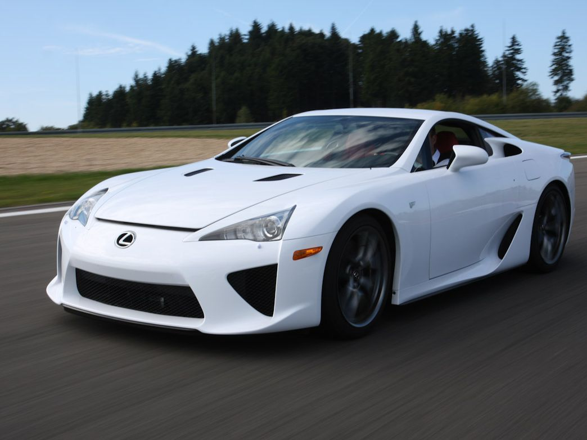

Lexus LFA

ㅤThe Lexus LFA (Japanese: レクサス・LFA, Rekusasu LFA) is a two-seat sports car manufactured by Lexus, the luxury car division of Toyota. It is the second model in the F marque line of performance vehicles from Lexus, following the IS F, and also the first standalone Lexus F model. Three concept versions were unveiled, each debuting at the North American International Auto Show with the LF-A designation as part of the LF Series concept line. After beginning development in the early 2000s (with a codename of TXS), the first LF-A concept premiered in 2005, followed in 2007 by a second concept with a more completely furnished interior and exterior. The third version of the LF-A, featuring a roadster body style premiered in 2008. The production model, trademarked LFA,[4] was unveiled at the Tokyo Motor Show in October 2009.[5] According to Lexus, the "A" in production LFA name stands for the "Apex" of the LF line of cars.[6]
ㅤAkio Toyoda, CEO of parent company Toyota Motor Corporation (TMC) saw the LFA as an opportunity to create a global icon for the Lexus brand, embodying Toyoda's idea that the ultimate Lexus should connect with its owner.[7]